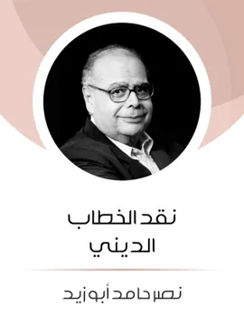

نقد الخطاب الديني

قراءة عربية أصلية محددة النطاق في الصفحات 9، 10 من ملف PDF المرتبط، وليست تلخيصا كاملا للكتاب. نناقش ما تدعمه هذه المقاطع فقط.
خريطة أولى لدراسة الصحوة
يرتب أبو زيد مواقف الباحثين من الظاهرة قبل أن يبني موقفه: فريق يراها إيجابية في مجملها وتحتاج إلى ترشيد وتوعية، وقد تعامل مع هذا الموقف في الفصل الأول من منظور التوحيد بينه وبين الظاهرة ذاتها، من حيث استنادهما إلى الثوابت الفكرية نفسها والآليات نفسها في إنتاج الخطاب؛ وفريق يتعامل معها بوصفها تعبيرًا حضاريًا عن واقع جديد يرفض التبعية والهيمنة الأمريكية الأوروبية ويتبنى مفهومًا للخصوصية يقوم على الانعزال.
زاوية وحدود القراءة
هذه قراءة في المقدمة من الصفحتين 9 و10، لا حكمًا على «الصحوة» ولا على نقد المؤلف لها. نقرأ تصنيف الاتجاهات بوصفه تمهيدًا منهجيًا لصاحب الكتاب، ونترك الحكم على تحليله ومواقفه للقارئ ولأهل الاختصاص؛ فالآراء تخص مؤلفها.
الطبعة والقراءة
هذه النسخة من الكتاب صادرة ومتاحة مجانًا بموجب اتفاق قانوني بين مؤسسة هنداوي وأسرة السيد الدكتور نصر حامد أبو زيد. النسخة الصوتية صادرة ومتاحة مجانًا بدعم من وفد الاتحاد الأوروبي في مصر.
تنزيل PDF المجاني ↓ القراءة والمصدر الرسمي ↗